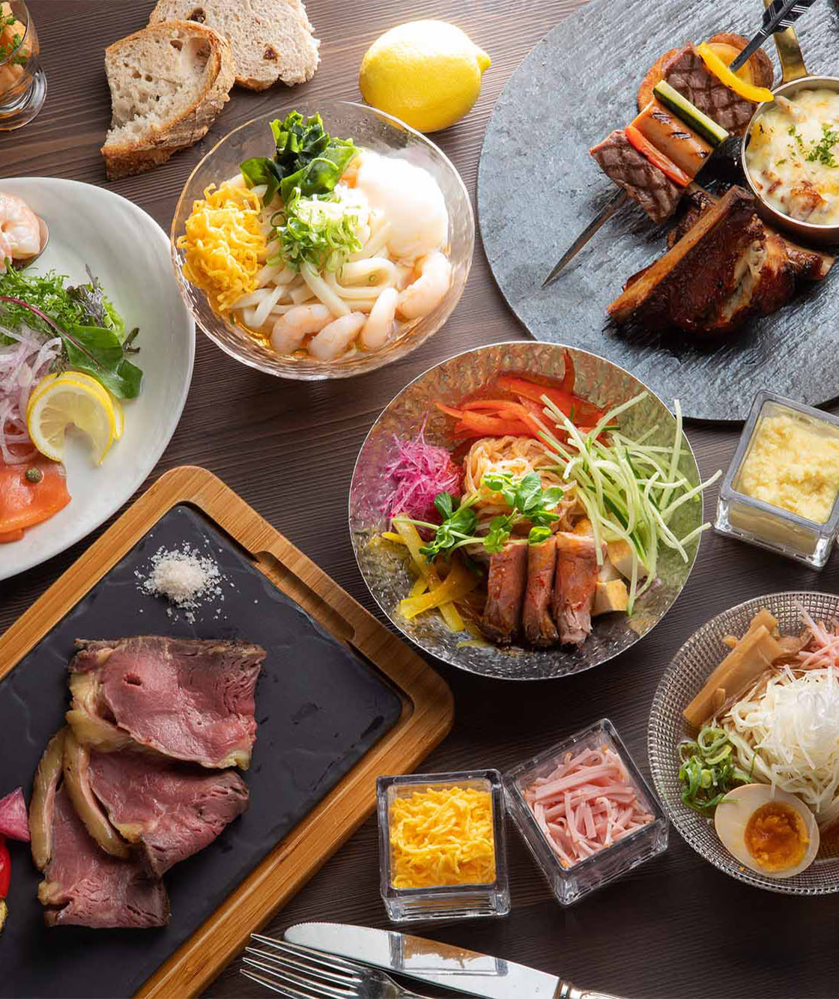
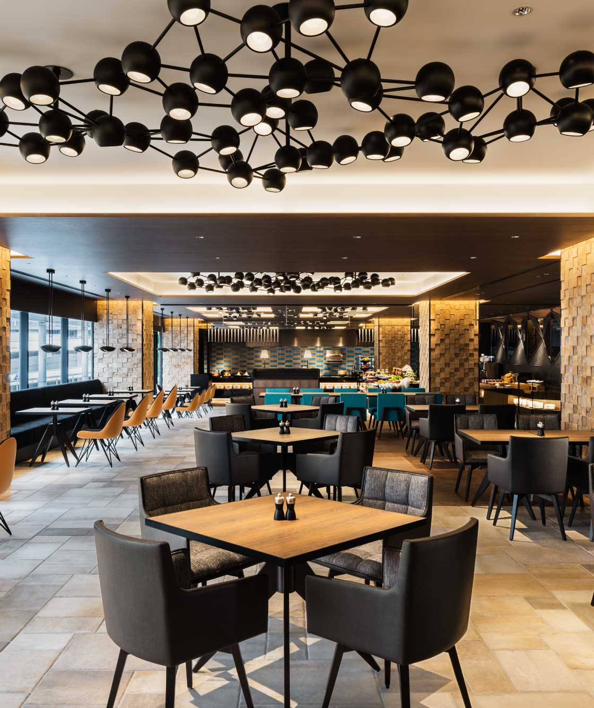
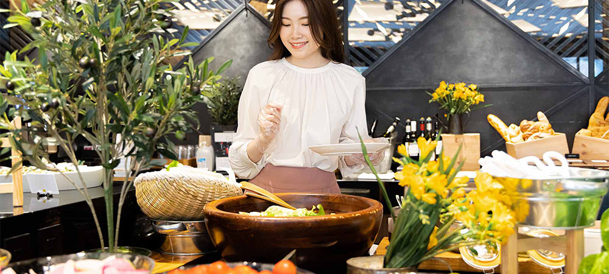
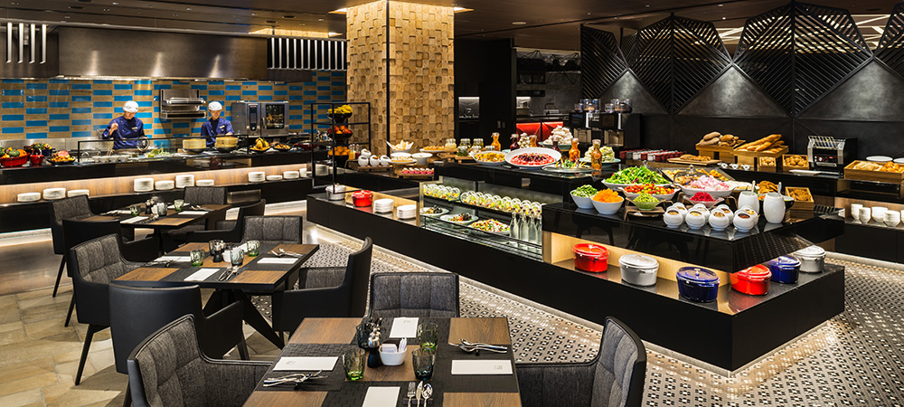
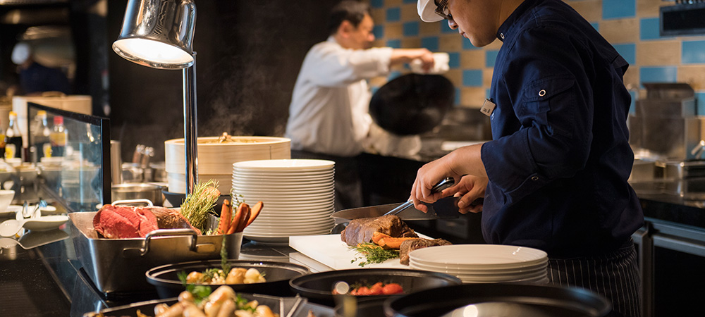
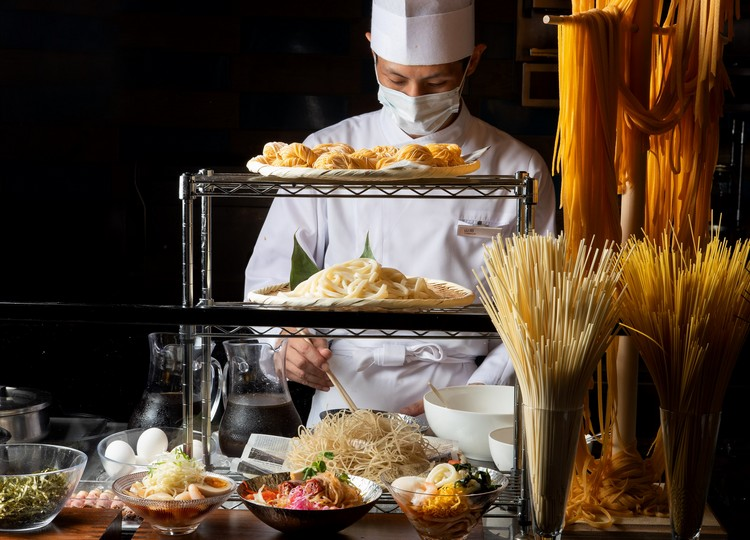
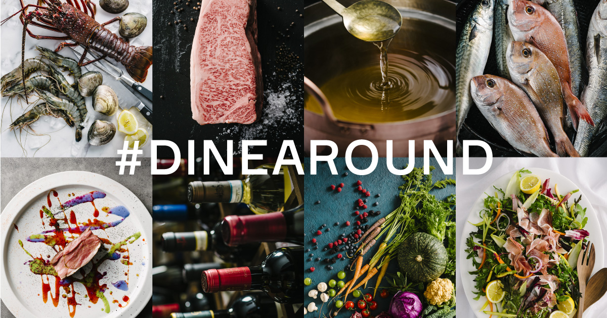
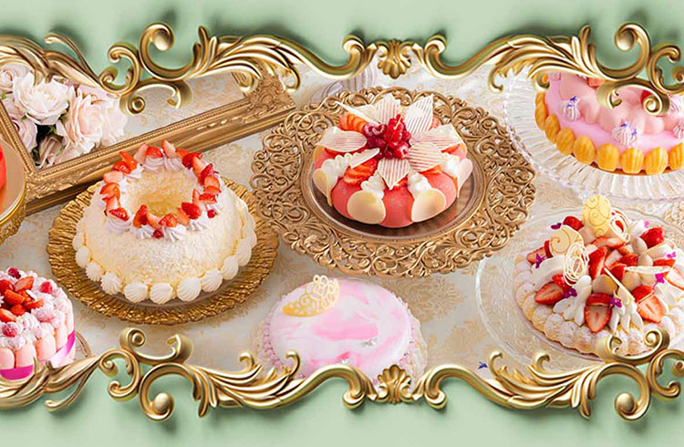
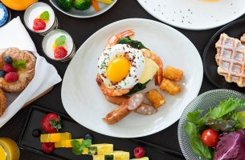
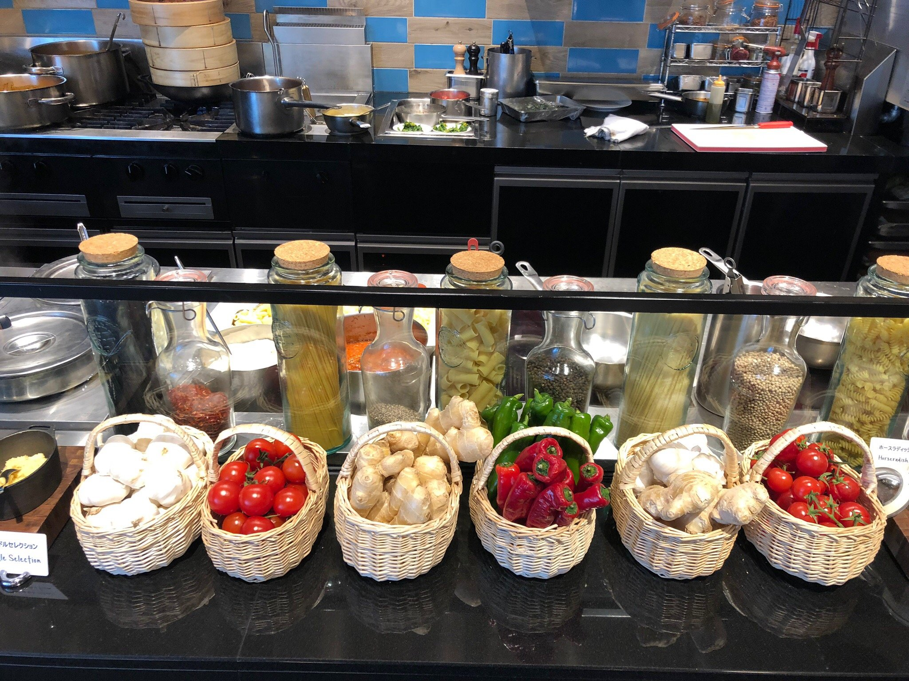

Galerie photos










Kevin, Loïc, May Nhia, Stéphanie, Estelle
Du 5 Avril au 27 Avril 2026
Buffet all-day dining du Hilton Osaka (Umeda), avec petit-déjeuner, lunch, sweets buffet et dinner, adapté aux groupes.










Folk Kitchen est une option claire pour un groupe de 5 : emplacement ultra central à Umeda (Hilton Osaka), buffet avec plusieurs services sur la journée, réservation en ligne sur TableCheck et grande capacité (116 places).
Conversion indicative sur base 1 EUR = 183.02 JPY (BCE du 04/03/2026). Taux variable.